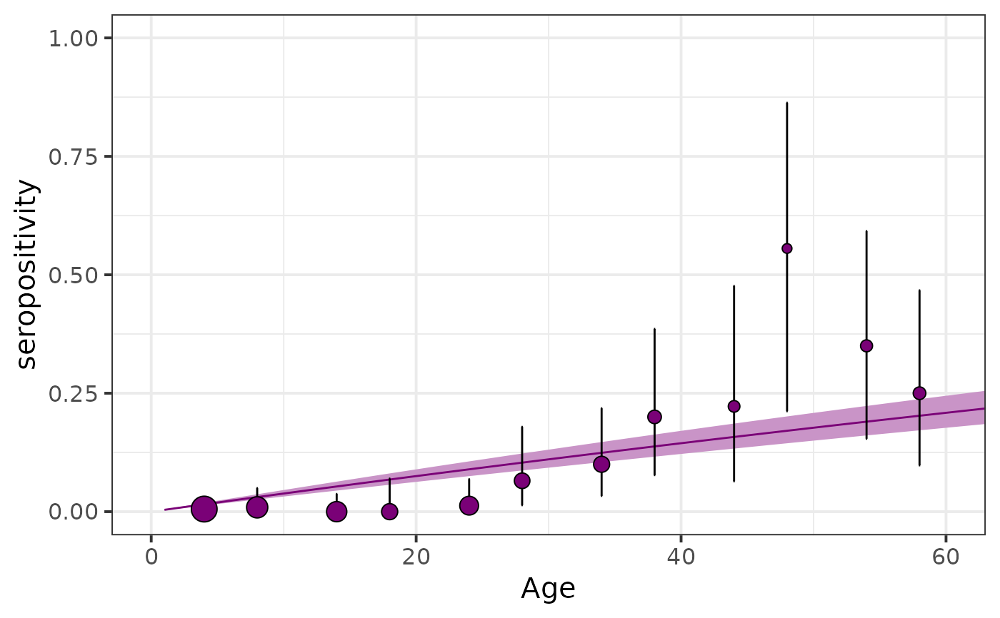

Function that generates a seropositivity plot corresponding to the specified fitted serological model
plot_seroprev_fitted.RdThis function generates a seropositivity plot of the specified serological model object. This includes the original data grouped by age as well as the obtained fitting from the model implementation. Age is located on the x axis and seropositivity on the y axis with its corresponding confidence interval.
Arguments
- seromodel_object
Stanfit object containing the results of fitting a model by means of run_seromodel.
- serodata
A data frame containing the data from a seroprevalence survey. This data frame must contain the following columns:
surveysurvey Label of the current survey
totalNumber of samples for each age group
countsNumber of positive samples for each age group
age_minage_min
age_maxage_max
tsurYear in which the survey took place
countryThe country where the survey took place
testThe type of test taken
antibodyantibody
age_mean_fFloor value of the average between age_min and age_max
sample_sizeThe size of the sample
birth_yearThe year in which the individuals of each age group were born
prev_obsObserved prevalence
prev_obs_lowerLower limit of the confidence interval for the observed prevalence
prev_obs_upperUpper limit of the confidence interval for the observed prevalence
The last six columns can be added to
serodataby means of the functionprepare_serodata().- size_text
Text size of the graph returned by the function.
Value
A ggplot object containing the seropositivity-vs-age graph including the data, the fitted model and their corresponding confidence intervals.
Examples
data(chagas2012)
serodata <- prepare_serodata(chagas2012)
seromodel_object <- run_seromodel(
serodata = serodata,
foi_model = "constant",
n_iters = 1000
)
#> serofoi model constant finished running ------
#> [,1]
#> foi_model "constant"
#> dataset "COL-035-93"
#> country "COL"
#> year "2012"
#> test "ELISA"
#> antibody "IgG anti-T.cruzi"
#> n_sample "747"
#> n_agec "72"
#> n_iter "1000"
#> elpd "-92.75"
#> se "6.4"
#> converged "Yes"
plot_seroprev_fitted(seromodel_object,
serodata = serodata,
size_text = 15
)
#> Warning: Removed 64 rows containing missing values (`geom_point()`).
